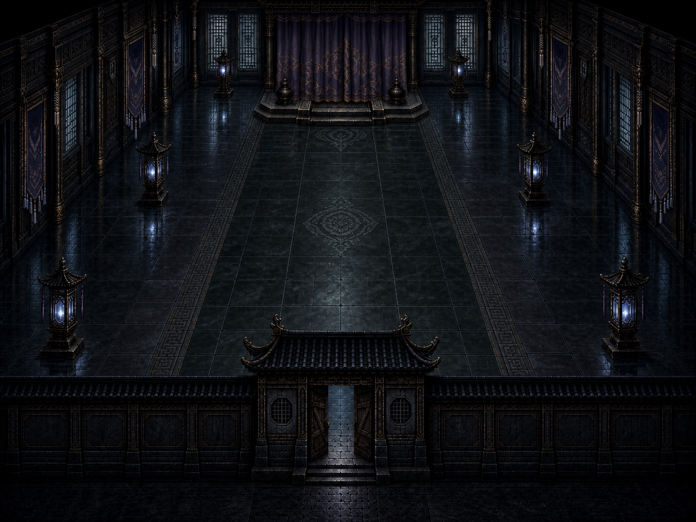

MoonSpace 美术资源审查
月之隙 / 场景美术资源
大背景场景
游戏核心场景的大型背景图，定义月宫世界的整体氛围

月宫庭院（关门 / 运行时）
当前正式 expanded 庭院底图（960×640）。旧 courtyard-bg-large.png（STALE） 不作为宫门依据。

广寒宫内殿（可行走运行时）
当前唯一可行走的帷幕底图（960×720）；正面王座图只作为 CG 构图候选。
开场 CG 分镜
游戏开场过场动画的逐帧分镜画面

月光
开场：血月升起

血月
开场：血月高悬

房间
开场：电脑屏幕

黑屏
开场：穿越黑屏
前院物体
月宫前院中可交互的场景物体与环境组件

月桂树
规则核心、活体树、树干人脸、流血状态

月池
运行时正式 144×144 圆池，中心由 MoonPool(480,300) 注入。旧 moon_pool.png（STALE fallback） 不作为正式画面依据。
宫门状态（expanded 关门）
正式宫门锚点来自 expanded closed/open 两态。旧 palace-wall-bg.png（STALE fallback） 不作基准。

月谷教程背景
起点场景背景
UI / 过渡画面
系统级界面背景与场景切换过渡画面

主菜单背景
游戏启动后的主菜单界面背景

场景切换画面
场景之间的过渡过渡动画帧
设计方向备注
待确认项目：前院宫门/水池正式美术（v9 候选在 tmp/art-approval-v9-cg-aligned/ 等待确认）
当前前院入口使用临时低干扰标记，月池仍使用原版加深反馈